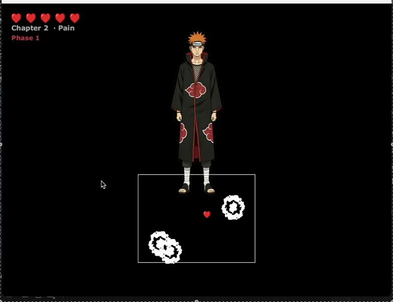
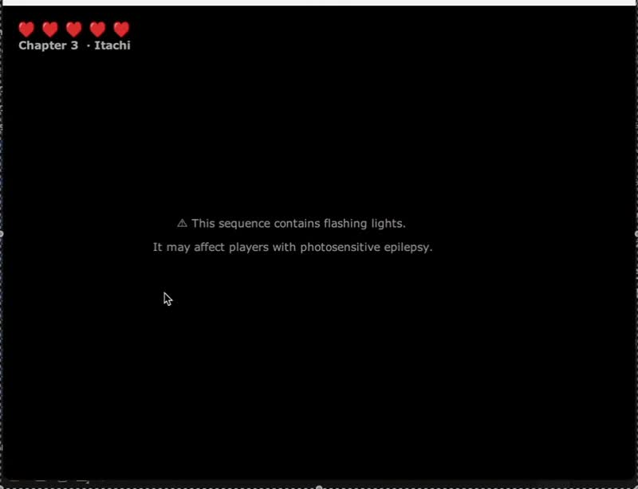

University coursework · April 2026
Akatsuki
A Java 2D game built around movement, dialogue and three boss encounters.
Java / Swing / City CS Engine / JBox2D
In the demo
The walkthrough covers movement and dash cooldowns, three different boss attack patterns, and saving and loading the player’s level, health and position. Level 2 leaves a small safe zone around the player when spawning explosions. In Level 3, crows track the player before committing to a straight-line charge, giving the player a chance to dodge.
I also explain the challenges of precise save positions and combat timing, and how the three levels share a parent class.
The game
The player moves through three levels, with different boss behaviours and directional gravity changes. Dialogue and exploration connect the combat encounters.
The Programming in Java Project assessment received 82%.
My part
I chose the bosses, designed each combat phase and the level progression, and wrote feature specs for Claude to implement. Then I playtested and tuned collisions, movement, spawn rates and timing, and recorded the demo.
Two bugs I tracked down myself: a deleted else-if branch that froze dialogue inside NPC zones, and a missing populate() call that stopped food items from appearing.
Claude wrote much of the Java code (the full AI declaration is linked below). Sprites and audio are AI-generated or from third-party sources; it’s an educational fan project.


Code & project notes
Java source and run instructions. The course engine and third-party media aren’t included, so it won’t run on its own.